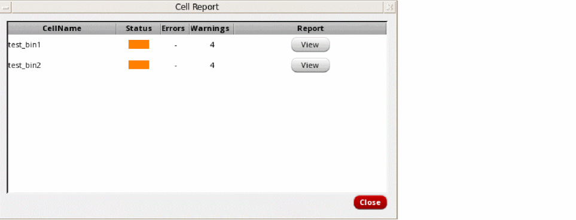
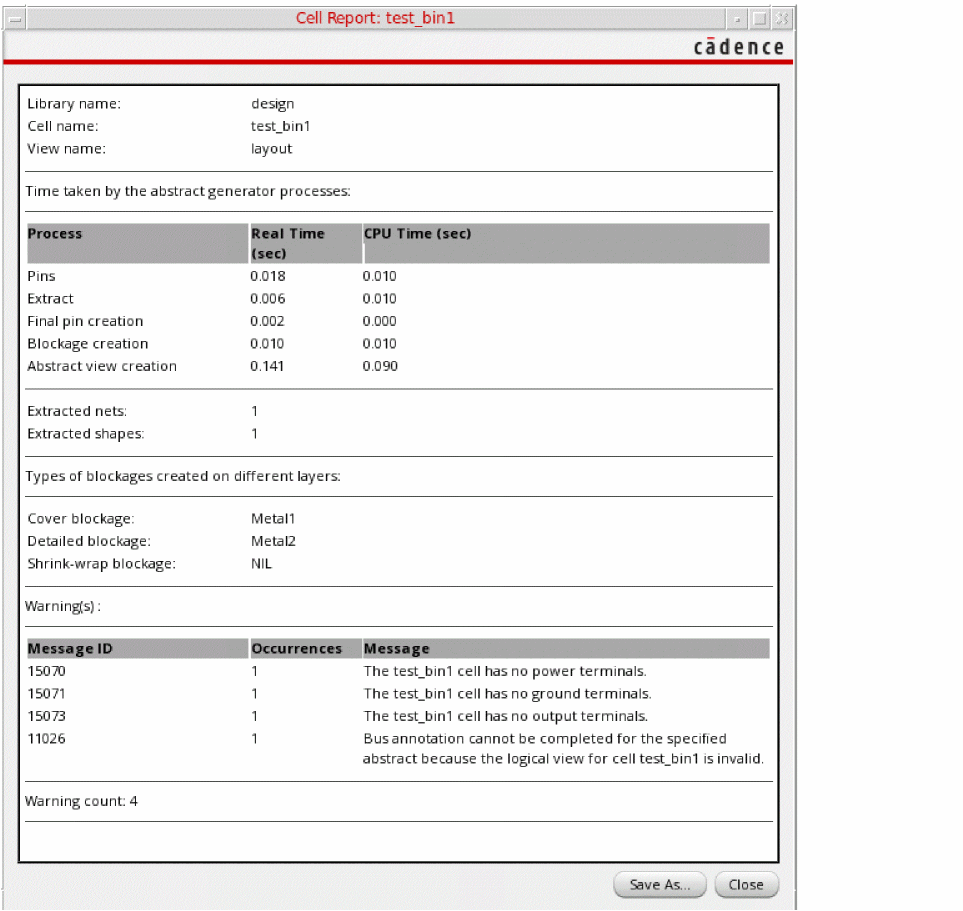
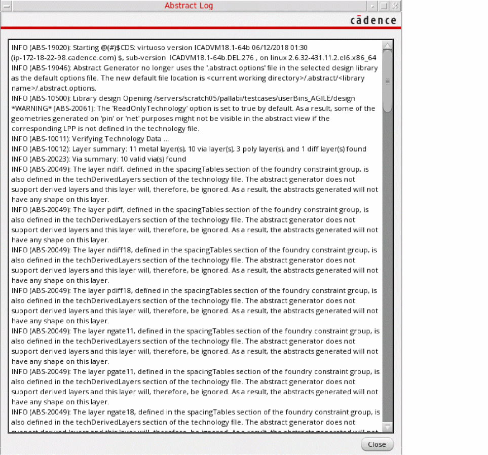
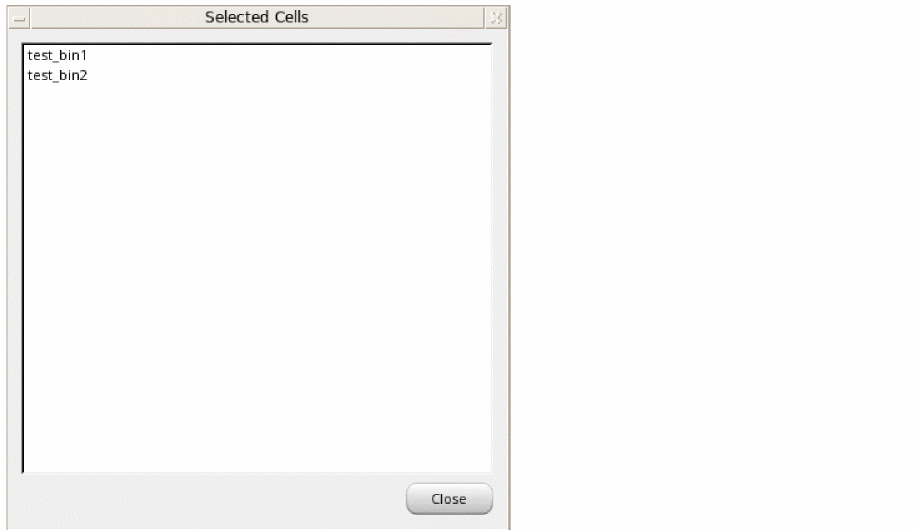

Viewing Results in the Abstract Generator Form
You can load values in the Abstract Generator form, run the Abstract Generator steps and view the results during the abstract generation process. You can use the log window to check whether the results are satisfactory. You can also use the Cell Report window to check the status of the cells that were included in the abstract generation process.
Viewing the Cell Report
-
In the Abstract Generator form, choose Tools – Show Cell Report.
The Cell Report window is displayed. -
Click the View button to view detailed information about the abstract generation process, including the time taken for abstract generation, types of blockages created on different layers, and the complete list of errors and warnings that were reported.

Viewing Log Information
The Abstract Log window displays runtime information, including all the information, warning, and error messages issued by Abstract Generator during the current session.
-
In the Abstract Generator form, choose Tools – Show Abstract Log.
The Abstract Log window is displayed.
The log information is also written to the CDS.log file.
Viewing the List of Cells
The Selected Cells window displays a list of all the cells that are selected in the Cell(s) field in the Design Information section of the Abstract Generator form.
-
In the Abstract Generator form, choose Tools – Show Selected Cells.
The Selected Cells window is displayed.
Related Topics
Specifying Design Information in the Abstract Generator
Return to top